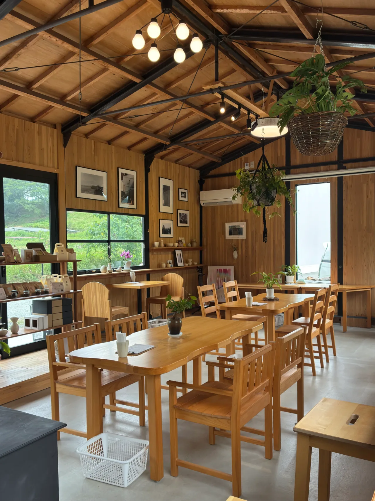
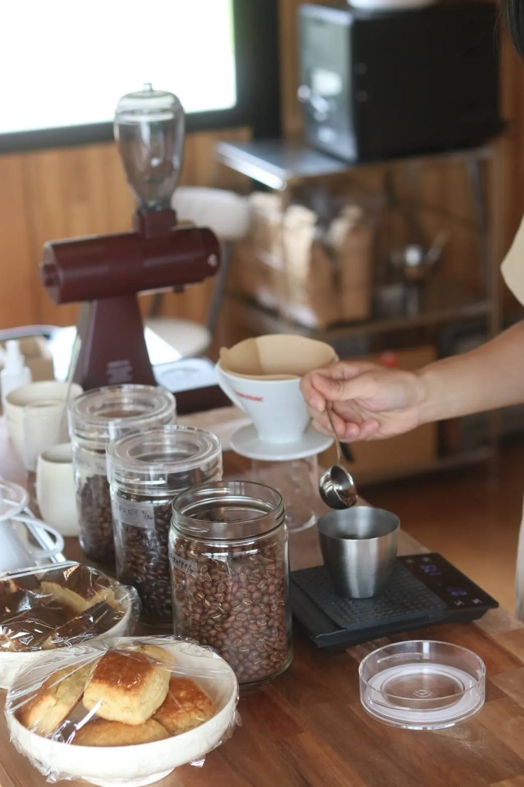
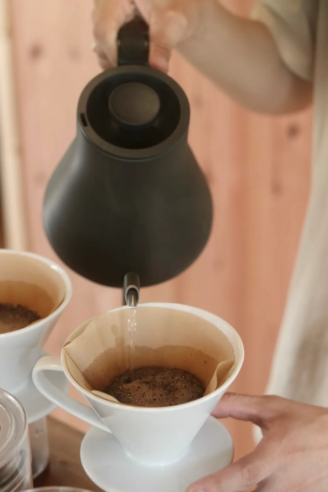
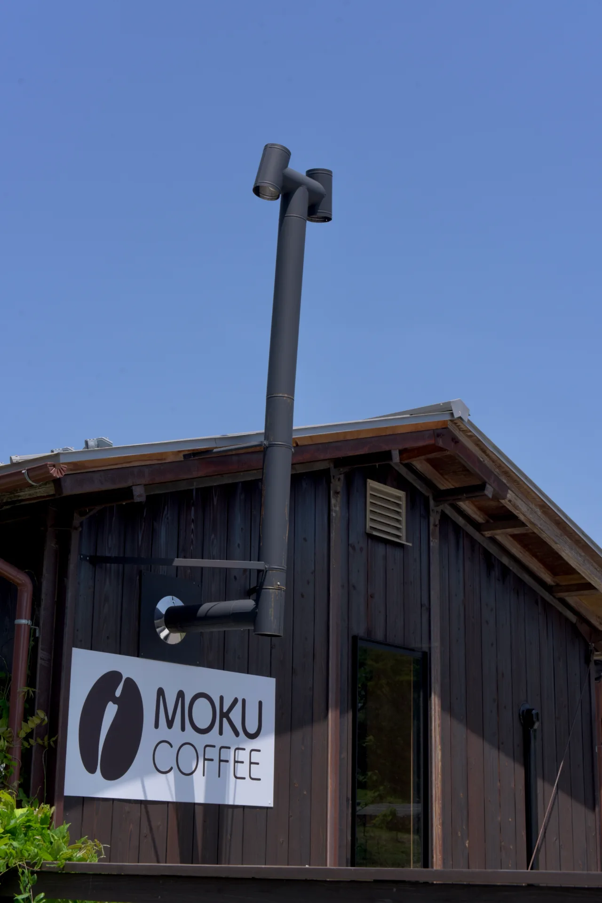

由良川と桂川の分水嶺にあたる、胡麻の高原にある喫茶店です。自家焙煎のコーヒーと手作りのスイーツ、ホットサンドなどの軽食があります。テイクアウトもでき、店舗の裏手に駐車場があります。


ホットドリップ 500円 ／ アイスドリップ 550円
エチオピア（浅煎）・ブラジル（中煎）・コロンビア（深煎）の3種から選べます
焙煎した豆は持ち帰れます。100g 800円・200g 1,500円で、銘柄も豆・粉も同じ値段です。店頭のほか、InstagramやLINEでも受け付けています。




| 住所 | 〒629-0311 京都府南丹市日吉町胡麻大戸2-1 |
|---|---|
| 営業時間 | 9:00〜18:00（ラストオーダー 17:30） |
| 定休日 | 木曜（祝日は臨時営業） |
| アクセス | 園部ICから車で約15分／道の駅 スプリングスひよしから車で約10分 |
| 駐車場 | 店舗の裏手に約5台 |
| お支払い | 現金のみ（価格は税込） |
| そのほか | テイクアウトあり。アルコールは20歳未満の方、お車を運転される方へは提供できません。 |
そのため、混み合うときは少しお時間をいただくことがあります。
MOKU COFFEEから歩ける距離に胡麻駅があります。1910年の出来事として、 京都丹波タイムトラベルの札になっています。
この札を年表で見る距離は地図上の直線距離です。
A coffee shop on the Goma plateau, on the watershed between the Yura and Katsura rivers. House-roasted coffee, homemade sweets and light meals such as hot sandwiches. Takeaway available, with parking behind the shop. Open 9:00-18:00, closed Thursdays.